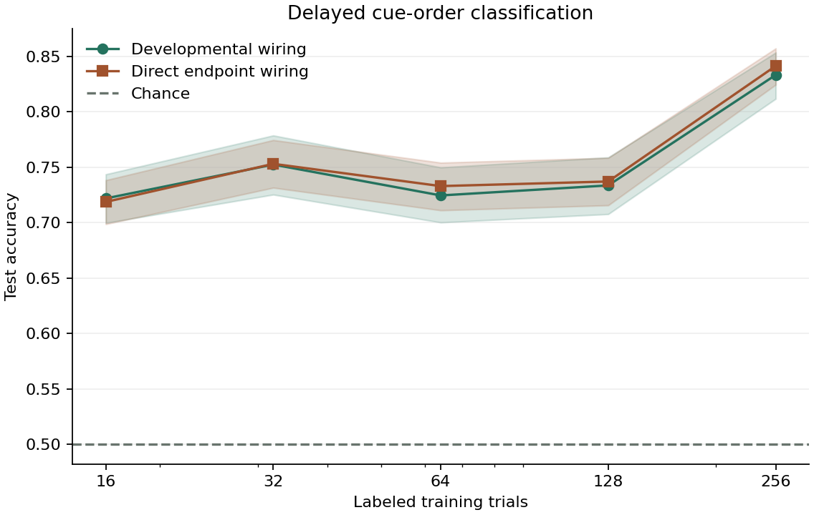

Simulation study
From one cell to a learning circuit
One artificial cell grows into a colony whose cells differentiate and wire through local interactions. The resulting circuit is frozen before any task inputs are presented.
We measure how signaling affects the spatial pattern of cell types during development, and how wiring history affects the number of examples a separate readout needs after development.
Explore the colonyDevelopment
Growth and cell differentiation
Loading developmental results…
An example colony over time
Scrub through recorded frames from the first evaluation seed.
- Uncommitted
- Excitatory
- Inhibitory
After development
Learning from labeled examples
A frozen recurrent circuit receives two synthetic cues. A separate ridge readout predicts their order from the circuit state after a delay. Both cue orders occur equally often.
Held-out accuracy by training budget
Training budgets count labeled trials. Intervals summarize variation across paired evaluation seeds.

View exact learning curve values
| Labeled trials | Growth wiring | Endpoint wiring |
|---|

How the comparisons work
-
Develop locally
One uncommitted synthetic cell starts the colony. Neighbor interactions shape cell fate as cells divide and connections form. The comparison with signaling disabled tests the role of that interaction.
-
Match the endpoint
The endpoint control builds a circuit from the final coordinates and cell types. The comparison matches outgoing connection counts by distance and uses the same weight rule and task inputs.
-
Fit the readout
After development, each circuit is frozen. Only the ridge readout uses task labels. An independent test set measures accuracy at each label budget.
Scope of the findings
The developmental rules and cue sequences are synthetic. The assays measure spatial differentiation and how readily a linear readout can extract cue order within this simulator. A later phase would compare reproducible cell-state predictions from the model with processed atlas summaries. Biological validation roadmap
Read the earlier study of activity-dependent pruning and memory.